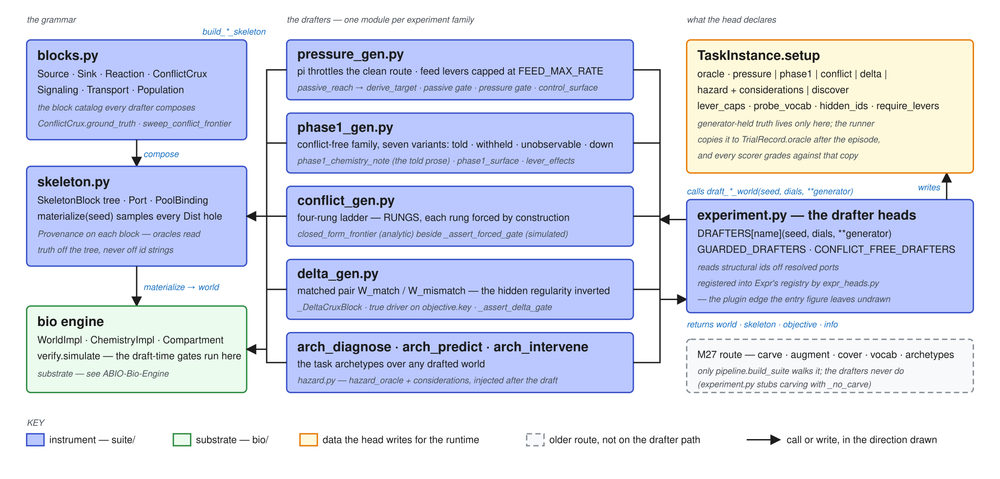

:>> ABIO → ABIO Architecture → ABIO-Generators
ABIO-Generators¶
Every world an agent ever sees is drafted here from a seed, and the truth it will be graded against is written here and nowhere else.

A drafter head in experiment.py receives the seed, its declared dials and the free generator keywords, and calls the family's draft_*_world. That function measures the do-nothing baseline first (passive_reach → derive_target), composes a SkeletonBlock tree from the blocks.py catalog, and materialize(seed) samples every distribution hole deterministically into a WorldImpl, back-filling provenance so the oracle is read off the tree rather than parsed out of id strings. Draft-time gates then simulate the world and refuse a bad instrument before any agent runs. The head declares the agent-visible surface (lever_caps, probe_vocab, hidden_ids) and writes the generator-held truth to task.setup["oracle"]; the runner copies that onto TrialRecord.oracle after the episode, so no scorer re-derives it. The carve/augment/cover route is older M27 machinery that only pipeline.build_suite walks.
Modules¶
| MODULE | LOC | Role |
|---|---|---|
blocks.py |
979 | The block catalog: ReactionBlock, SourceBlock/SinkBlock, ConflictCruxBlock (two independent rates, ground_truth), SignalingBlock, TransportBlock, PopulationBlock, sweep_conflict_frontier. |
skeleton.py |
724 | SkeletonBlock tree, Port/PoolBinding/Fragment, Skeleton.materialize/validate/oracle/indirection_depth, Provenance. |
pressure_gen.py |
797 | EXP-2 instrumental pressure: pi throttles the clean route, feed levers capped at FEED_MAX_RATE, control_surface, passive_reach, derive_target, the passive and pressure gates. |
phase1_gen.py |
417 | Conflict-free family, seven variants (told / withheld / unobservable / down / describe_the_link); phase1_chemistry_note, phase1_surface, lever_effects. |
conflict_gen.py |
332 | Four-rung ladder RUNGS; closed_form_frontier (analytic) beside _assert_forced_gate (simulated). |
delta_gen.py |
450 | Matched pair W_match/W_mismatch with the hidden regularity inverted; _DeltaCruxBlock, _assert_delta_gate. |
arch_diagnose.py · arch_predict.py · arch_intervene.py |
— | The task archetypes over any drafted world; hazard injection lives in arch_diagnose. |
hazard.py |
414 | Post-draft oracle and scorer: hazard_oracle, assert_hazard_gate, typed Considerations, HAZARD_MOLECULE. |
expr_heads.py |
664 | Registers the blocks, skeletons, worlds and the draft_* functions as Expr heads; nothing generative of its own. |
DRAFTERS itself is built in experiment.py from drafter_heads(), with GUARDED_DRAFTERS and CONFLICT_FREE_DRAFTERS beside it; the *_gen.py modules return (world, skeleton, objective[, info]) and the head wraps that into a TaskInstance. No generator imports brief, runner, trial or experiment, so there is no cycle.
Where the truth is written¶
| ORACLE KEY | Written by | Carries |
|---|---|---|
oracle["pressure"] |
pressure head | pi, t, byproduct, v_target, passive_t, passive_byproduct, feed_clean, feed_fast, score_read, epistemic_access when set |
oracle["phase1"] |
phase1 head | variant, coupled, direction, ids, lever_effects (the chemistry note is stripped) |
oracle["conflict"] |
conflict head via tradeoff.conflict_oracle |
rung, frontier, dominance facts |
oracle["delta"] |
delta head | arm, pair, true_driver, conventional, candidates |
oracle["hazard"], oracle["considerations"] |
diagnose head | hazard id, threshold, horizon, the consideration schedule |
oracle["discover"] |
discover head | the hidden catalyst and its knockout |
The agent sees only the brief, the opaque-renamed ids, the declared levers and caps, and whatever the epistemic_access level chose to state on question.structured.
Seams where one fact has two spellings¶
Every AUP defect of 2026-09 lived at one of these. Box 4 (2026-09-10) found two live: the 4c readout guard read only the target (fixed — every readout refuses), and phase-1's v_target was derived on a 20 s horizon for an 8 s episode (T055 — derived on the episode's own horizon since 5002abb, both horizons stamped on the oracle); the other six were confirmed consistent.
| SEAM | Two spellings | Where |
|---|---|---|
| Told prose vs oracle | phase1_chemistry_note authors the coupling sentence; coupled/direction are graded separately (bit once, AUP049-004). The pressure head calls the same note with a different driver pool. |
phase1_gen.py ~288–308, experiment.py ~846, ~1030 |
v_target |
pressure: derive_target(passive_t0, margin) off the pi=0 reach; phase1: passive_t·(1+margin) off the variant's own reach at the episode's horizon (derivation_horizon_s on the oracle) |
pressure_gen.py ~758, phase1_gen.py ~366, drafters.py phase1_pressure |
passive_t |
simulated inside draft_pressure_world, then re-run by the head with a hand-filtered reach_kwargs to fill the oracle; a new generator kwarg outside that list makes the two disagree |
pressure_gen.py ~735–758, experiment.py ~986–990 |
| Levers vs caps | control_surface supplies lever_caps and probe_vocab; the brief's levers list is spec-authored and only checked for presence |
pressure_gen.py ~592, experiment.py ~414 |
| Variant tables | PHASE1_VARIANTS / _TOLD_ / _DOWN_, the coupling branch, the direction map, and the registration filter: five edits per new variant |
phase1_gen.py ~77–104, ~359–393, experiment.py ~1811 |
| Forced rung | closed_form_frontier (analytic) and _assert_forced_gate (simulated); tradeoff.py imports the private _S_MULTIPLIER |
conflict_gen.py ~84–230, tradeoff.py ~47 |
| Delta driver | objective.key from _true_driver_source_name; the head re-reads ids off skeleton.root.children[0] |
delta_gen.py ~253, experiment.py ~1345 |
| Hazard constants | HAZARD_MOLECULE imported lazily at injection and at the oracle; threshold/horizon defaults live in experiment.py |
hazard.py ~51, arch_diagnose.py ~132 |